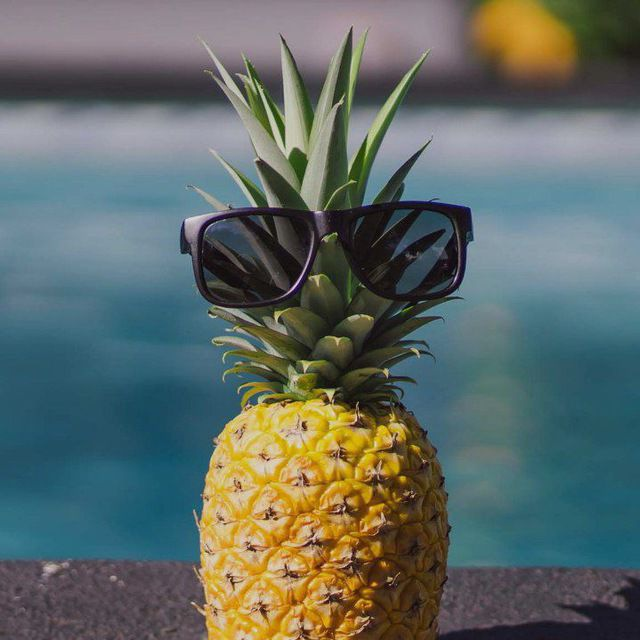

Ананас
Ананас

Дата рождения:
По данным Википедии около 4 тысяч лет назад
Место рождения:
Бассейн реки Параны
Научная классификация:
Домен: Эукариоты
Царство: Растения
Порядок: Злакоцветные
Семейство: Бромелиевые
Род: Ананас
Вид: Ананас хохлатый
Царство: Растения
Порядок: Злакоцветные
Семейство: Бромелиевые
Род: Ананас
Вид: Ананас хохлатый
Международное научное название:
Ananas comosus
Имя при рождении:
Nanas (рус. превосходный вкус)
Автограф:
Вступил в Орден:
2 января 2025 года
Ананас настоящий представлен в культуре многочисленным разнообразием сортов не только в Южной Америке, где растут представители рода Ананас, но и по всем тропическим странам земного шара.
История
Все культурные пищевые и десертные сорта ананасов относятся к виду Ананас крупнохохолковый (Ananas comosus). Он был одомашнен около 4 тысяч лет назад индейцами тупи-гуарани, жившими в бассейне Параны. Постепенно культура ананаса распространилась на всю тропическую Южную и Центральную Америку, причём были выведены бессемянные сорта. На Антильских островах, в частности, карибы использовали плоды ананаса в пищу, из ферментированного сока готовили напитки, а из волокон делали верёвки, тетивы для луков и одежду. Именно там с ананасом впервые познакомились европейцы: в ноябре 1493 года Христофор Колумб видел его на островах Гваделупа, Гаити и Ямайке, взяв образцы с собой в Испанию. Придворный историк Пьетро Мартире записал свидетельство короля Фердинанда, что «его вкус превосходит все прочие фрукты». Слово ananas происходит из языка тупи, в котором nana означало «отличный фрукт»; однако в некоторых европейских языках, включая английский, название ананаса связано с сосной, шишку которой несколько напоминает его плод. Отсюда, в частности, происходит название коктейля пинья колада.
Колониальные державы быстро разнесли саженцы ананаса по тропическим регионам мира: уже в XVI веке португальцы и испанцы рассадили его в своих колониях в Южной Америке, на Азорских островах, в Западной Африке, на Мадагаскаре, в Индии, Китае и Юго-Восточной Азии, включая Филиппины; несколько позже он появился в голландских колониях в Индонезии и Южной Африке.
В Полинезию ананас завезён был в конце XVIII века, и получил там широкое распространение. «Ананасов здесь такая бездна, — сообщает побывавший в 1835 году на Таити Чарльз Дарвин, — что их едят в таком же количестве и так же небрежно, как у нас репу. Они чрезвычайно сочны и даже, может быть вкуснее тех, которые выводятся в Англии; а это, кажется, лучший комплимент, который может быть сделан какому-нибудь плоду.»
На Ямайке из ананасового сока некоторое время производился ром. Однако морская перевозка плодов в Европу была трудной и ненадёжной, поэтому во второй половине XVII века ананасы начали выращивать в обогреваемых теплицах: первый известный урожай был получен в Нидерландах Агнетой Блок около 1687 года. Особенно успешно в этой области работал Питер де ла Кур ван дер Форт (1664—1739), в 1710 году построивший тепличный комплекс при своём доме в Лейдене и выращивавший там виноград, ананасы и другие экзотические фрукты. Свою продукцию он рассылал по аристократическим и монаршим домам всей Европы и сам принимал путешественников, делясь с желающими своей технологией. К 1720 году по его методу были выращены первые ананасы в Англии, к 1733 — во Франции. В 1717 году де ла Кура посетил Пётр I, и по его просьбе в 1721 году тот послал в Петербург чертежи теплиц и несколько ананасных растений.
Уже в 1730 году для московского дворца императрицы Анны Иоанновны были привезены 20 растений из петербургских оранжерей. В середине века их стал выращивать в своих теплицах граф П. И. Шувалов, а затем и многие другие дворяне. К 1793 году ананасы появились в свободной продаже в Москве; для более долгого хранения их даже стали солить в кадках. По данным шотландского ботаника и путешественника Дж. К. Лаудона, в Великобритании в начале XIX века выращивалось 24 сорта ананасов; по его же оценке, среди остальных стран наиболее активными в этом деле были садовники России, значительно менее — Франции, Германии и Италии.
В XVIII веке плод ананаса стал распространённым архитектурно-дизайнерским мотивом: в его форме выполнялись не только детали столбов, лестниц, предметы мебели и посуды, но даже завершения церковных башен и целые части зданий.
До начала XIX века для обогрева теплиц обычно применялись навоз и мочёная дубовая кора. В 1820 году в Петербурге была построена по проекту К. А. Тона ананасная оранжерея с паровым отоплением, хотя оно оказалось сложным, трудоёмким и ненадёжным в работе. После отмены крепостного права культура ананасов в России начала приходить в упадок, тем более что развитие пароходного флота заметно облегчило доставку плодов из тропических регионов. Но и в конце XIX — начале XX века существовало их промышленное выращивание в ряде губерний (в целом, в тепличных или комнатных условиях в природно-климатических условиях средних широт возможно выращивание плодов массой 500-880 грамм, которые созревают через шесть месяцев после цветения).
Во второй половине XIX века ананасы в Европу поставлялись в основном с Азорских островов, а рынок США обеспечивался Флоридой и островами Карибского бассейна. В начале XX века на Гавайях началось широкомасштабное производство консервированных ананасов и ананасового сока, чему поспособствовало изобретение «машины Джинака» для чистки и нарезки плодов. В 1922 году владелец технологии Джеймс Доул[англ.] купил целый остров Ланаи и превратил его в крупнейшую ананасовую плантацию. С 1930-х годов Гавайи стали доминирующим в мире производителем, работая в основном для рынка США; другими крупными поставщиками стали Малайзия, Тайвань и Филиппины.
С 1960-х годов консервированные ананасы постепенно уступали долю рынка свежим и замороженным. В Бразилии, Индии и Китае развилось внутреннее потребление, место же основных экспортёров заняли Кот-д’Ивуар и Коста-Рика. В 1980-х резко выросло производство концентрированного сока. Благодаря внедрению с 1996 года нового культивара MD-2, отличающегося низкой кислотностью, рынок свежих ананасов США и Европы вырос в несколько раз. Общемировое производство с 1961 по 2013 годы увеличилось примерно с 4 млн т до 25 млн т.
Ботаническое описание
Тропическое многолетнее травянистое растение до 60 см высотой, с розеткой длинных, узких, грубых и в то же время сочных (суккулентных) листьев, зубчатых по краю.
Цветки расположены на цветоносном стебле на верхушке, густо по спирали, собраны в соцветие початок. Цветки обоеполые, зигоморфные, с тремя листочками околоцветника, одним пестиком и шестью тычинками. Все цветки срастаются между собою, свободными остаются только верхушки листочков околоцветника и кроющего листа. Тычинки в виде жгута обвивают по спирали столбик. Завязь состоит из трёх плодолистиков, трёхгнёздная, плацента с семяпочками расположена на перегородках по месту срастания плодолистиков.
В той фазе, когда ананас употребляется в качестве фрукта, он представляет собой крупное (до 2 кг), похожее на шишку хвойного дерева, соплодие золотисто-коричневого цвета, с пучком коротких листьев на верхушке, которые развиваются вследствие пролиферации — прорастания цветоноса сквозь соплодие. Соплодие состоит из довольно сочной, но грубоватой оси и отходящих от неё в бока сросшихся между собою чрезвычайно сочных и нежных плодов, несущих на своих вершинках остающиеся и грубеющие части цветка и кроющего листа. Стенки отдельного плода слагаются из плодолистиков и разросшихся листочков околоцветника, цветоложа и кроющего листа, иногда одно из трёх гнёзд недоразвито.
Семена у культурных сортов ананаса не развиваются. В гнёздах спелого плода легко можно обнаружить мелкие семяпочки, выделяющиеся на фоне стенок гнезда белым цветом. Все части соплодия пронизаны многочисленными проводящими пучками. В осевой части они идут в основном по вертикали, от оси пучки проходят в косом и косогоризонтальном направлении в плоды.
Незрелое соплодие ананаса обладает едкими свойствами, обжигает губы, раздражает стенки желудка, на кишечник действует как сильнодействующее слабительное. Зрелый плод теряет едкие свойства.
Химический состав
Мякоть ананаса на 86 % состоит из воды, в ней довольно много простых сахаров (12—15 мг %), представленных в основном сахарозой, органических кислот (0,7 мг %) — преимущественно лимонной, и до 50 мг % аскорбиновой кислоты. Кроме этого в ананасе присутствуют витамины B1, B2, B6, PP, провитамин A.
Мякоть плодов богата минеральными веществами — калием (до 320 мг %), железом, медью, цинком, кальцием, магнием, марганцем, йодом.
Соплодия ананаса также содержат бромелаин — комплекс протеолитических (то есть расщепляющих белки) ферментов высокой активности. Благодаря бромелаину улучшается усвоение организмом белковых веществ. Злоупотребление же ананасами приводит к повреждению слизистой оболочки рта[24]. В ананасе содержится 40 мг% витамина С (в листьях — до 120 мг%).
Ананас в геральдике и искусстве
Соплодия ананаса изображены на современных гербах Ямайки и Антигуа и Барбуды .
Ананас упоминается в произведении А. С. Пушкина "Евгений Онегин":
❝ И Страсбурга пирог нетленный Меж сыром лимбургским живым И ананасом золотым. ❞
В 1915 году в Петрограде поэт Игорь Северянин написал своё широко известное стихотворение «Ананасы в шампанском», которое начинается словами:
❝ Ананасы в шампанском! Ананасы в шампанском!Удивительно вкусно, искристо и остро! ❞
В 1917 году поэт Владимир Маяковский написал широко известную и цитируемую рифмовку:
❝ Ешь ананасы, рябчиков жуй, День твой последний приходит, буржуй. ❞
Ананас в Ордене Торговцев
Вступил в него 2 января 2025 года и находится в нем до сих пор.
Участвовал в войнах с Республикой и Уву.
Состоял во всех Орденах (Мегаколис, Китобоевский Орден, Новый Орден и т.д).
Во время деления Ордена выбрал сторону Шкафа, но по итогу из-за ухода Шкафа (4 февраля 2025) Ананас остался с Китобоем.
Подозревается Шкафом в шпионаже (это не правда).
Является автором:
● книги про историю Ордена